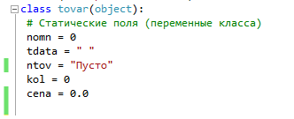
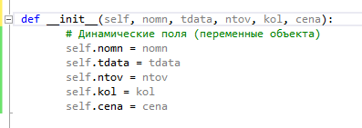
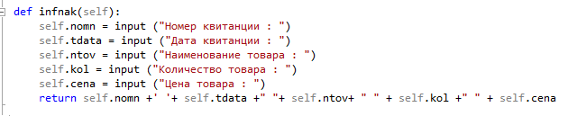
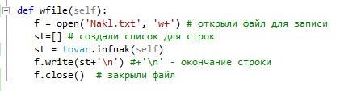
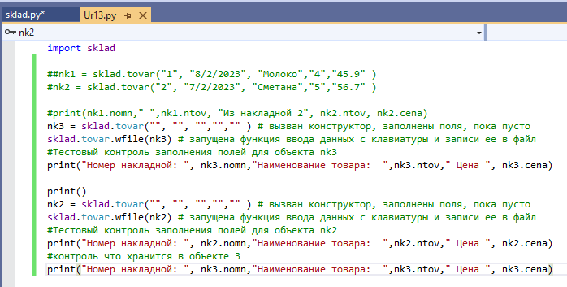
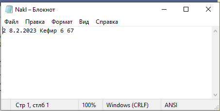
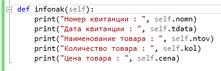
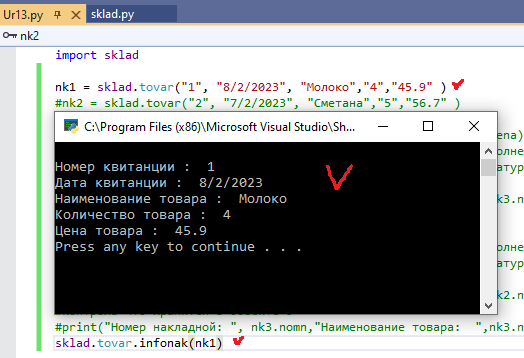

| Объяснение реализации задания. | ||
| Назад | ||
|
1. Создадим класс Tovar. 2. Объявим статические поля
 3. Создадим конструктор для инициализации полей ( поля динамические)
 4. Создадим процедуру для ввода данных с клавиатуры
 5. Создадим процедуру для записи данных в файл
 6. Подключим модуль к главному файлу и проверим работу созданных методов. ( создать несколько экземпляров накладной)
 7. Проверим собрание данных в файл
 8. Создадим процедуру Отчет о приеме товара по одной квитанции
 9. Проверим работу функции
 Далее продолжаем самостоятельно.
|
||
| Конспект подготовлен Бакулиным А. М. 2022 год. | ||